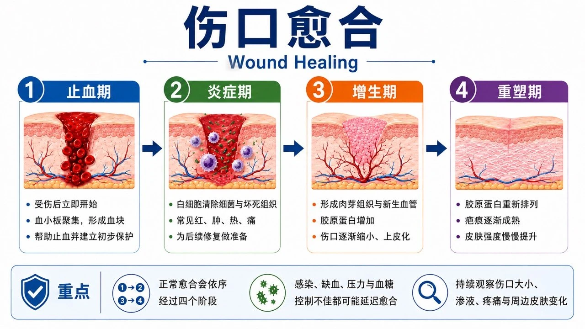

伤口是怎么愈合的？（一般民众版）
一、伤口愈合的四个阶段
身体在受伤后会立刻启动修复工作。这些阶段不是一天一个阶段依序完成，而是同时交错进行；因此，伤口有时看起来变化不大，内部仍可能正在清除受损组织、形成新血管与创建新的皮肤。

| 阶段 | 大约何时 | 你可能看到什么 |
|---|---|---|
| 1. 止血 | 受伤后立即开始 | 血液凝固、形成血块或痂，帮助止血 |
| 2. 清理与发炎 | 前几天 | 轻微红、肿、热、痛可能是正常反应；免疫细胞正在清除细菌与受损组织 |
| 3. 长新组织 | 数天至数周 | 长出红色或粉红色肉芽，新皮肤从边缘往中央生长，伤口逐渐缩小 |
| 4. 疤痕成熟 | 数周至数月以上 | 疤痕从红、硬逐渐变淡、变软，但强度通常不会完全等同原来皮肤 |
二、哪些变化可能是正常的？
伤口刚形成时，少量红肿、疼痛或透明分泌物不一定表示感染，重点是变化的方向。正常情况通常会一天比一天减轻；若红肿范围扩大、疼痛加剧、分泌物增加或出现全身不适，就需要重新评估。
- 刚受伤后短暂轻微红、肿、热、痛，之后逐渐减轻
- 少量透明、淡黄色或淡血色分泌物，且量逐渐减少
- 伤口床出现湿润、红色或粉红色的新生肉芽
- 新皮肤从边缘慢慢往中央生长
- 愈合后的疤痕一开始较红、较硬或有些痒，之后逐渐变淡
三、哪些因素会让伤口比较慢好？
伤口愈合需要足够血流、氧气、营养，以及不被持续摩擦或压迫。糖尿病、血管疾病、肾脏病、吸烟与感染都可能使修复速度下降；如果只处理表面伤口，却没有改善这些原因，伤口容易反复或长期不愈合。
| 因素 | 常见例子 | 你可以做什么 |
|---|---|---|
| 血液循环不足 | 脚冰冷、苍白、发紫、走路或休息时疼痛 | 不要自行剪黑痂；尽快接受血管与伤口评估 |
| 感染 | 红肿热痛扩大、脓液、恶臭、发烧 | 尽快就医；换药不能取代抗感染治疗 |
| 持续受压或摩擦 | 久坐久卧、鞋子挤压、走路反复压迫 | 依指示翻身、减压、使用合适鞋具或辅具 |
| 糖尿病与慢性病 | 血糖高、肾病、免疫低下 | 规律用药与回诊；足部新伤口应早期评估 |
| 营养不足 | 吃得少、体重下降、蛋白质不足 | 维持足够热量、蛋白质与水分；高风险者接受营养评估 |
| 吸烟 | 尼古丁使血管收缩、组织氧气下降 | 戒烟可改善愈合条件 |
四、帮助伤口愈合的居家原则
居家照护的目标是让伤口保持干净、受到保护并维持适当湿度。换药次数不是越多越好，应依分泌物量、敷料状态与医疗人员指示调整；过度清洗、反复撕除黏住的纱布或使用刺激性药水，都可能伤害新生组织。
- 依医嘱清洁与换药，洗手后再接触伤口
- 保持适度湿润但不要泡水；敷料湿透、渗漏、脱落或污染时应更换（湿敷换药怎么做？）
- 不要自行把酒精、双氧水、草药、粉末或偏方放进伤口
- 不要任意剪除黑痂、腐肉或把纱布塞进看不到底部的伤口
- 糖尿病足要减压；压伤要翻身减压；静脉伤口是否压迫须先评估血流
- 吃足够的蛋白质与热量、补充水分、控制血糖并避免吸烟
- 按时回诊，不要因为表面结痂就假定深部已完全愈合
五、每天可以怎么观察？
建议每天在相近时间观察，并比较「趋势」而不是只看单一天。若要拍照，可使用相同距离、角度与光线，旁边放置不接触伤口的比例尺；照片只供追踪，不能取代医疗人员对深度、血流与感染的实际检查。
| 观察项目 | 记录重点 |
|---|---|
| 大小与深度 | 有没有变大、变深，或出现新的洞与潜行 |
| 颜色与组织 | 红／粉红新组织、黄白腐肉、黑色组织是否改变 |
| 分泌物 | 量、颜色、浓稠度、气味是否增加或改变 |
| 周围皮肤 | 是否红肿、泡白、破皮、起疹或发热 |
| 疼痛与全身状况 | 疼痛是否增加；有没有发烧、畏寒、精神变差 |
| 照片 | 相同距离、角度与光线下拍摄并记日期；不要把姓名或身分数据拍入 |
六、什么时候要尽快就医？
有些伤口即使外观不大，也可能伤到深部组织或因血液循环不良而迅速恶化。当出现持续出血、感染快速扩散、皮肤变黑、肢体冰冷或全身症状时，不宜等待下一次例行换药，应立即联系医疗单位或前往急诊。
- 出血持续不止，或出现喷射状鲜红色出血
- 红、肿、热、痛快速加重，出现大量脓液或恶臭
- 发烧、畏寒、意识改变、呼吸急促或全身明显不舒服
- 伤口快速变黑、变深、范围扩大，或出现水泡、捻发感
- 脚部冰冷、苍白或发紫，疼痛突然增加
- 看到骨头、肌腱或深层组织，或有异物留在伤口内
- 伤口突然裂开，特别是手术伤口变深或有内部组织突出
- 糖尿病、洗肾、免疫低下或血液循环不良者，足部出现任何新伤口
七、疤痕照护
疤痕成熟通常需要数月，早期颜色较红、摸起来偏硬或偶尔发痒并不少见。除疤照护应在伤口完全闭合后开始；若仍有破皮、渗液或感染，先处理伤口本身，避免产品刺激或把细菌封在尚未愈合的区域。
- 伤口尚未完全闭合前，不要自行使用除疤产品
- 完全闭合后可依医疗人员建议使用硅胶凝胶／片、适度按摩或压力治疗
- 避免曝晒，使用衣物屏蔽；适合使用防晒时依专业建议选择
- 疤痕持续变厚、超出原伤口、明显痒痛或影响活动时，请看整形外科或皮肤科
八、一句话总结
更小、更浅、分泌物更少、疼痛减轻、新皮肤增加 ＝ 正常方向
正常愈合通常是疼痛、红肿与分泌物逐渐减少，新皮肤慢慢增加；若伤口没有改善、反而变大变深，或出现感染、缺血与全身警讯，应回诊重新评估。若方向相反或数周没有合理进步，不代表照护者做错，而是需要重新确认病因与治疗方法。
📋 回诊时可以告诉医疗人员
- 伤口出现多久、原因及先前处理方式
- 疼痛、分泌物、气味及大小如何改变
- 是否发烧、畏寒、血糖升高或活动受限
- 每天如何换药、敷料多久会湿透或干掉
- 可携带固定角度与距离拍摄的伤口照片，协助比较
最后更新：2026-08-29